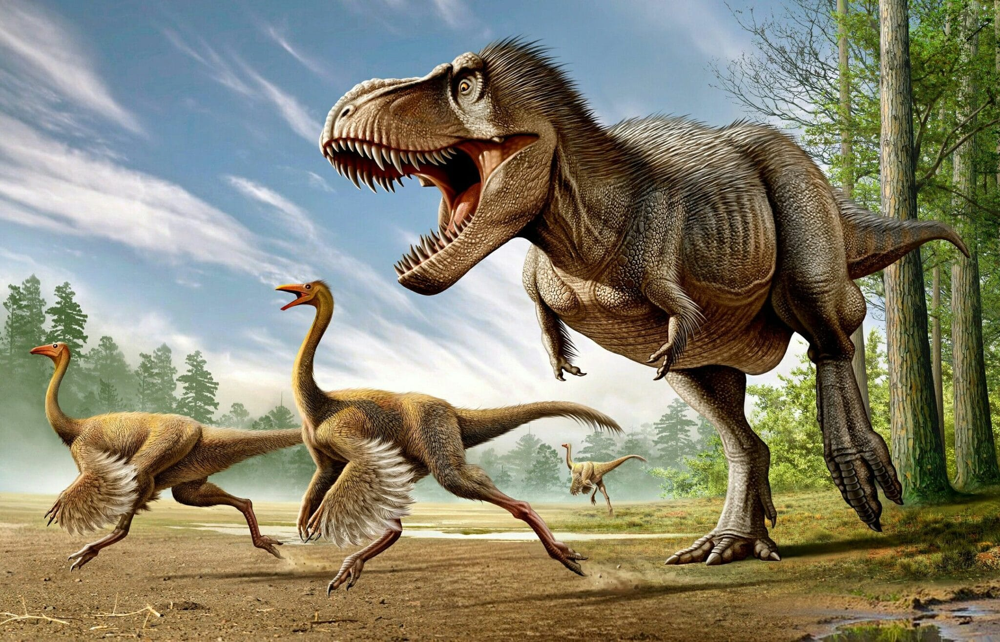

Тероподы
Тероподы, или хищные динозавры (лат. Theropoda, от др.-греч.«зверь» + «нога»; буквально: «звероногие») — клада ящеротазовых динозавров, традиционно рассматриваемая в ранге подотряда. Все тероподы перемещались на двух ногах, большинство — хищники, реже всеядные или растительноядные (теризинозавры, орнитомимиды). Большинство учёных с недавних пор стали относить к тероподам и современных птиц; таким образом, птицы стали считаться не потомками динозавров, а представителями одной из их групп. Кисть обычно трёхпалая, стопа — четырёхпалая с опорой на 2−4-й пальцы. Тероподы составляли около 37 % всех известных родов нептичьих динозавров.
Эволюционное происхождение перьев можно проследить начиная с синозавроптерекса и Dilonq paradoxus, покрытых волокнистым пухом. У каудиптерекса, протархеоптерекса, синорнитозавра и микрораптора можно наблюдать настоящие перья.
Классификация тероподов
- Карнозавровые
- Мегалозавриды
- Попзавриды
- Орнитозухиды
- Спинозавриды
- Тираннозавриды
- Целурозавры
- Целуриды
- Подокезавриды
- Прокомпсогнатидные
- Сегизавры
- Дейнонихозавровые
- Дейнохейриды
- Дромеозавриды
- Завронитоидиды
- Орнитомимозавровые
- Орнитомимиды
- Сегнозавровые
- Сегнозавр